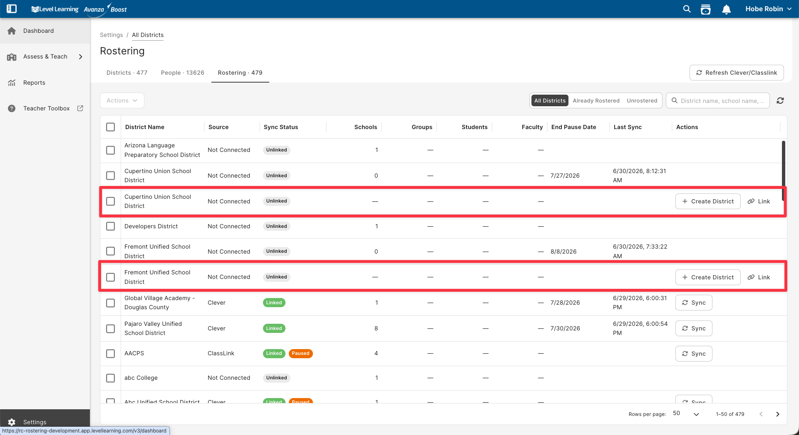
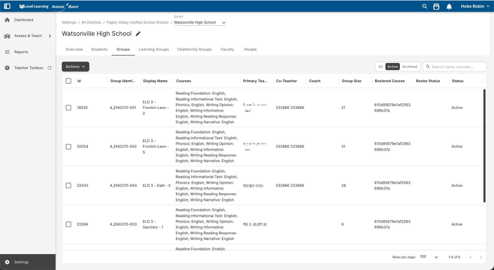
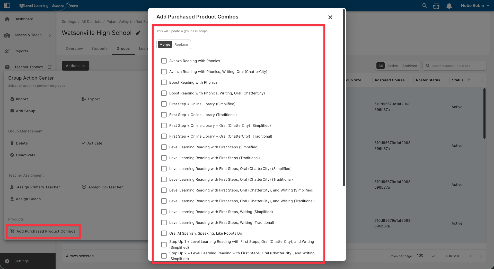
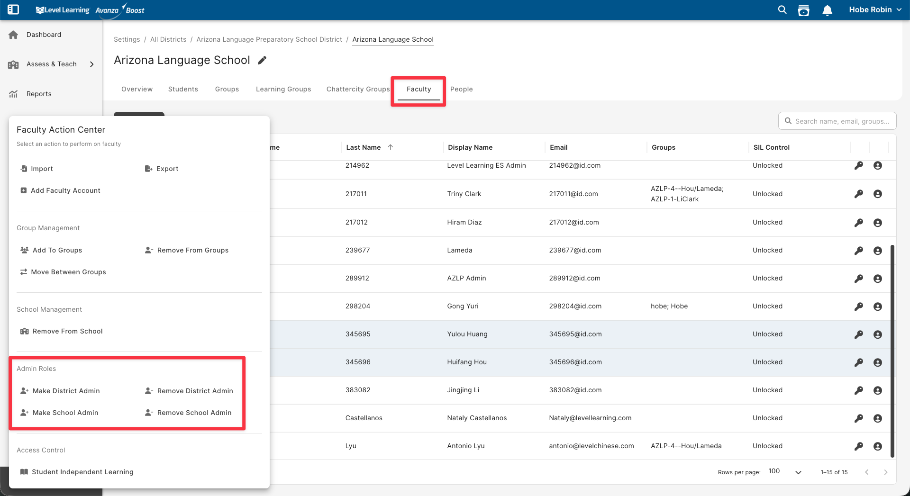
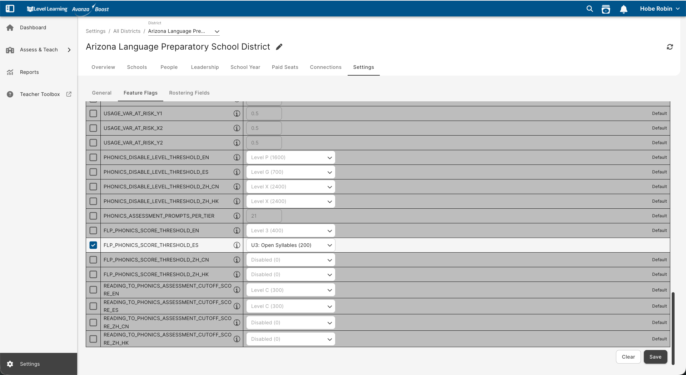
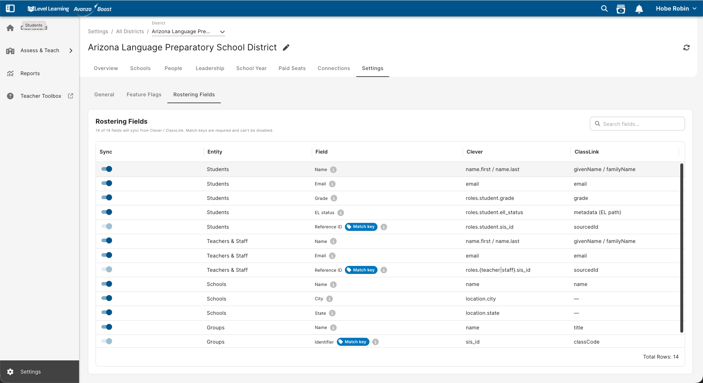

Customer Success · Internal Guide
Rostering & Account Setup
How rostering works in the new system — and the exact steps to bring a district online.
Rostering a district — start to finish
- Open the Rostering tab on the all-districts page — it lives in Settings, and everything about rostering now starts here.
- Link or create the district — Link it if it's already in our system, Create District if it's new.
- Pick which courses sync in the district's Connections tab. This is the only filter on what comes in; by default nothing is selected.
- Activate the schools & groups you need — schools, groups, and students come in inactive; activating a group turns its students active.
- Add product combos to the active groups — that's what gives their students access.
Part 1
Rostering a district, step by step
Clever/ClassLink used to decide what comes into our system. Now the courses you choose to sync decide — and you activate the groups you need.
Everything tied to the courses you sync comes in from Clever/ClassLink — schools, groups, faculty, and students. Faculty come in active; schools, groups, and students come in Inactive. Activating a group turns its students active, so the work is to activate the groups that matter and give them a product combo.
| Old way | New way | |
|---|---|---|
| The import gate | Clever/ClassLink decided who came in | The Synced courses filter — and nothing else |
| Who comes in | Only records that "passed" the gate | Everyone in the courses you select — groups and people |
| How records arrive | Active, or hidden if filtered out | Faculty active; schools, groups & students come in Inactive |
| Your core job | Filter people out | Activate the groups you need; combos give access |
- Open the Rostering tab on the all-districts page.
It lives on the Settings page (the top, all-districts layer) — everything about rostering now starts here. The tab lists every district with its rostering status at a glance.
- Link or create the district.
If the district already exists in our system, click Link to associate it. If it's brand-new, click Create District to add it.
- Pick which courses sync — then run the sync.
Click into the district and open its Connections tab. Under Synced courses, check the courses you want and run the sync. By default nothing is selected, so nothing comes in until you choose. Everyone tied to those courses arrives — groups and people — straight from Clever/ClassLink. Leave a course unchecked (a math-only course, say) and those students never enter the system.
- Activate the schools and groups you need.
Because schools, groups, and students land Inactive, the core job is activating what matters. The groups come in from Clever/ClassLink (you don't build them); review them, then Activate the ones you need, one at a time or bulk on any layer. Activating a group turns its students active (and deactivating it turns them off). Extra groups you never activate do no harm — they stay Inactive and out of the way.
- Add product combos to the active groups.
A product combo is the bundle of products the school paid for. Add it to an active group and all that group's students get access — same as before. Apply a combo to one group, or bulk-apply across many at once.





Part 2
Rostering & Connections
The Rostering tab lives on the Settings page (the top, all-districts layer) — everything about rostering now starts here. It shows every district's status at a glance, and it's where you link or create a district before you sync. Click into a district to open its Connections tab, which lives inside that district and holds the connection, its sync history and change log, the course selection — where you choose which of that district's courses to sync — and a rostering problems panel that flags anything a sync couldn't complete cleanly.
flowchart LR
A["Settings page
(top, all districts)"] --> B["Rostering tab
status · link / create district"]
B -->|open a district| C["Connections tab
(within the district)"]
C --> D["Connection
Clever / ClassLink"]
C --> E["Last sync summary"]
C --> F["Synced courses
pick courses to sync"]
C --> P["Rostering problems
issues + how to resolve"]
C --> G["Sync history
time · trigger · result"]
C --> H["Change log
what each sync changed"]
The Rostering tab (Settings page) lists every district with its status at a glance, and is where you link or create a district — covered in Steps 1–2 above. Open a district from here to reach its Connections tab.
Inside a district, the Connections tab shows:
- Connection — the roster provider (Clever or ClassLink, for now) and whether it's connected.
- Last sync summary — a snapshot of the most recent sync.
- Synced courses — choose which of the district's courses sync in. This is the only filter on what comes in.
- Rostering problems — anything a sync couldn't complete cleanly with an explanation of the issue.
- Sync history — each sync's time, trigger, and result.
- Change log — what has changed on the district (schools, groups, faculty, students).


Part 3
Group roles
| Role | How many | How it's set | Overwritten by sync? |
|---|---|---|---|
| Primary teacher | One | From Clever/ClassLink, or set it yourself (bulk apply / group details) | Yes — Clever/ClassLink wins when it defines one |
| Co-teacher | One | Bulk apply, or on group details | No — not a Clever/ClassLink role |
| Coach | Many | Bulk apply, or on group details | No — not a Clever/ClassLink role |
Co-teacher and coach aren't Clever/ClassLink roles, so a sync can't overwrite them — set them once and they stick. Assign either by bulk apply across groups, or directly on a single group's details.


Part 4
Group names & finding the right group
Naming standard: group names are automatically prefixed with the primary teacher and co-teacher last names in parentheses, so you can tell who a group belongs to.

Group picker: when you choose a group, the picker now shows the school and district names. Across an account with more than one school or district, you can see exactly which group you're selecting.

Part 5
Active vs. Inactive
Faculty arrive active; schools, groups, and students arrive Inactive. A student's status follows its group — activate a group and its students go active; deactivate it and they go inactive. So the core of rostering is activating the groups you need. The active/inactive flag decides whether a record counts, not whether it exists, and we've made flipping it easy.
- Works across all layers: district, school, group, faculty, student.
- Status column — every layer's table has a Status column, so you can read each record's active/inactive state at a glance.
- Filter by status — an All / Active / Inactive toggle on each layer lets you show everything or narrow to one; inactive isn't hidden.
- Bulk apply active/inactive on any layer — select records, then Activate or Deactivate.
- Deactivating cascades down — activating does not. Turn off a district and everything inside it — schools, groups, faculty, students — goes inactive too (same for a school: its groups and people follow). Activating never cascades down the hierarchy: you turn on the specific schools and groups you need, one by one or in bulk. (A group's own students do follow it — activate the group and they go active.)

Year rollover
At the start of each new school year this happens automatically — you don't run it. CS gets an email reminder two weeks before.
- Last year's groups are retired: a group with no students and no product combos is deleted; every other group is set to Inactive.
- The new roster comes in and creates the new year's groups, associating the relevant students and faculty.
Net effect: the old group goes inactive and the new one comes to life. From there, treat the new groups exactly like Part 1 — activate the ones you need, then add the product combo. You can also filter on the inactive records: even if more groups came in than you need, that's fine, and the unused ones get cleaned up automatically.
Part 6
Districts, schools & admins
These used to mean going into Django to get them done. Now you do them yourself, right in the app:
- Create / edit a district
- Create / edit a school
- Assign district admins and school admins
To create: use the create button at the top of the Schools or Districts list (for example, Add School) and fill out the form. To edit: click the pencil icon next to the school or district's name.


How admin access works
You no longer add an admin to each group one by one. Granting someone district admin or school admin access automatically gives them full access to the district or school — they can see every group and all the data in that district or school.
This also happens on its own from rostering: faculty brought in through Clever or ClassLink who are marked as an admin automatically get access at their expected layer (school or district) — no manual step needed.

Part 7
Settings: feature flags & roster fields
The Settings tab lets you tune things per district:
- Feature flags — per-district controls for how parts of the app behave.
- Rostering fields — choose which fields sync from Clever / ClassLink.


Reference
The rostering flow at a glance
flowchart TD
A["Rostering tab
(all districts)"] --> B["Link or create
the district"]
B --> C{"Connections tab:
pick which courses sync"}
C -->|Selected| D["Schools, groups, students arrive
INACTIVE — faculty active"]
C -->|Not selected| X["Never enters our system"]
D --> E["Activate the schools
and groups you need"]
E --> F["Add product combo
to the active group"]
F --> G["Students go live"]
classDef gate fill:#fdedc7,stroke:#b45309,color:#7a3c08;
classDef sync fill:#e0e9ff,stroke:#1d4ed8,color:#163a9e;
classDef on fill:#d7f3ee,stroke:#0f766e,color:#0b5249;
class C sync;
class E on;
class F gate;
click A mmJump
click B mmJump
click C mmJump
click D mmJump
click E mmJump
click F mmJump
click G mmJump
click X mmJump
Tip — click any step in the chart to jump to the part that explains it.
Reference
Words you'll see
- Clever / ClassLink
- The services districts use to send us their roster — the list of schools, teachers, students, and groups.
- Sync
- When that Clever/ClassLink data is pulled into our system and refreshed.
- Synced courses
- The courses you choose to bring in. This is the only filter on what enters our system.
- Product combo
- The bundle of products a school paid for — for example, "Avanza Reading with Phonics."
- Active / Inactive
- Whether a record counts in the product right now. Inactive stays visible for history but doesn't count.
- Layer
- A level in the account — district, school, group, or student.
- Feature flag
- A switch that turns a specific feature on or off for one district.